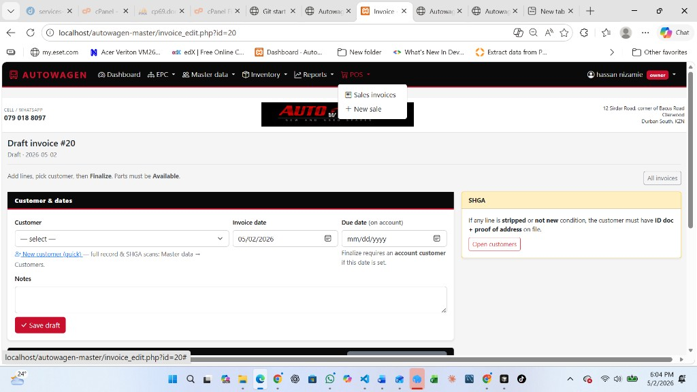
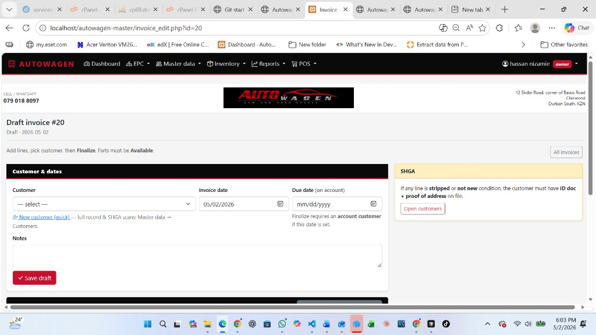
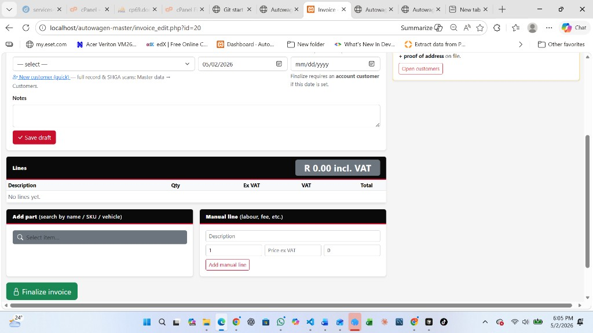
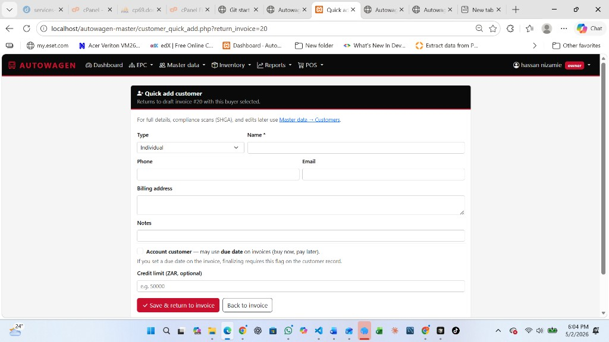
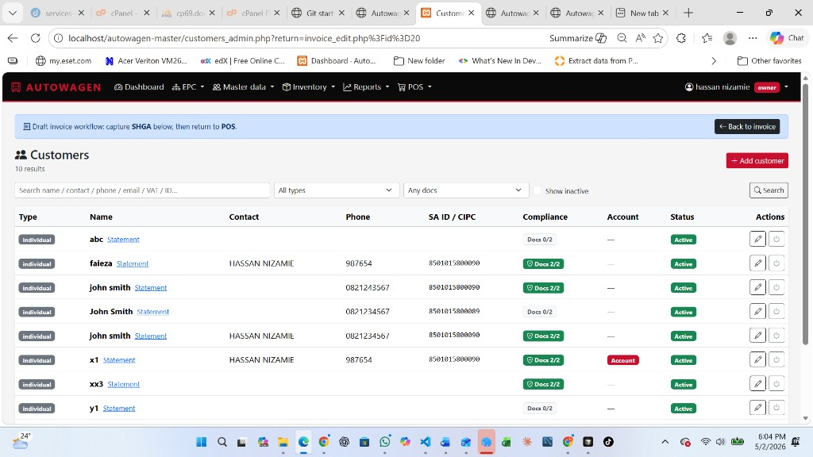
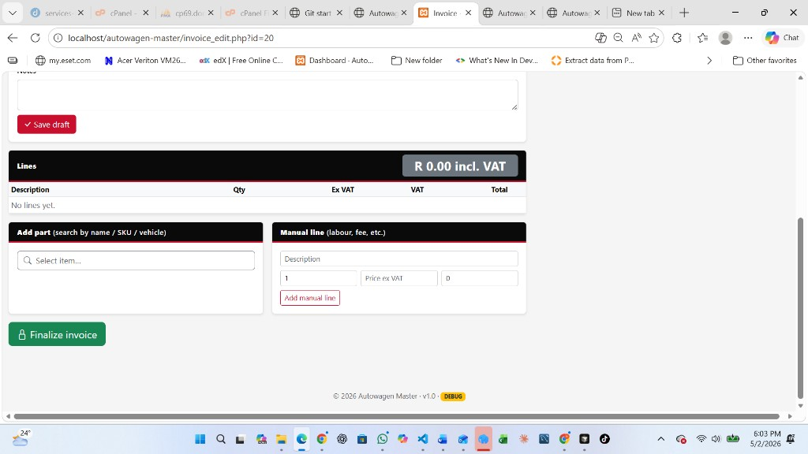
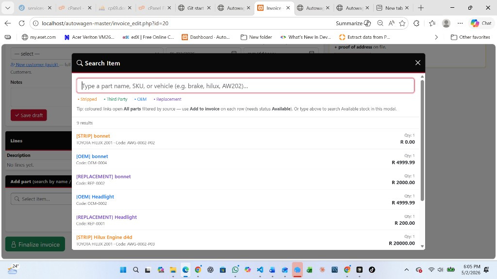
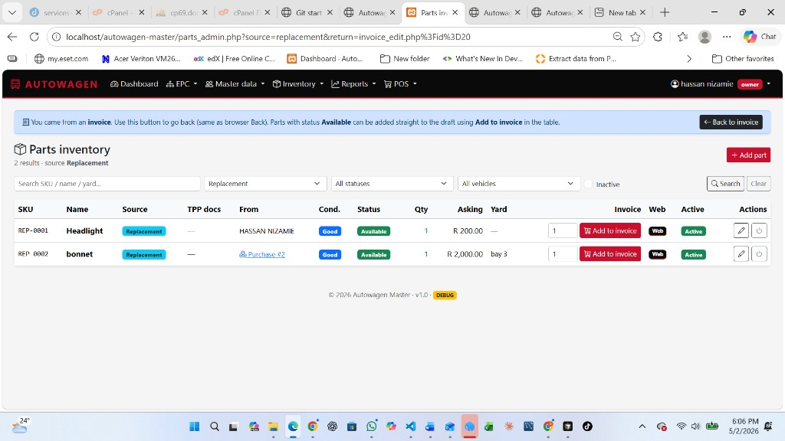
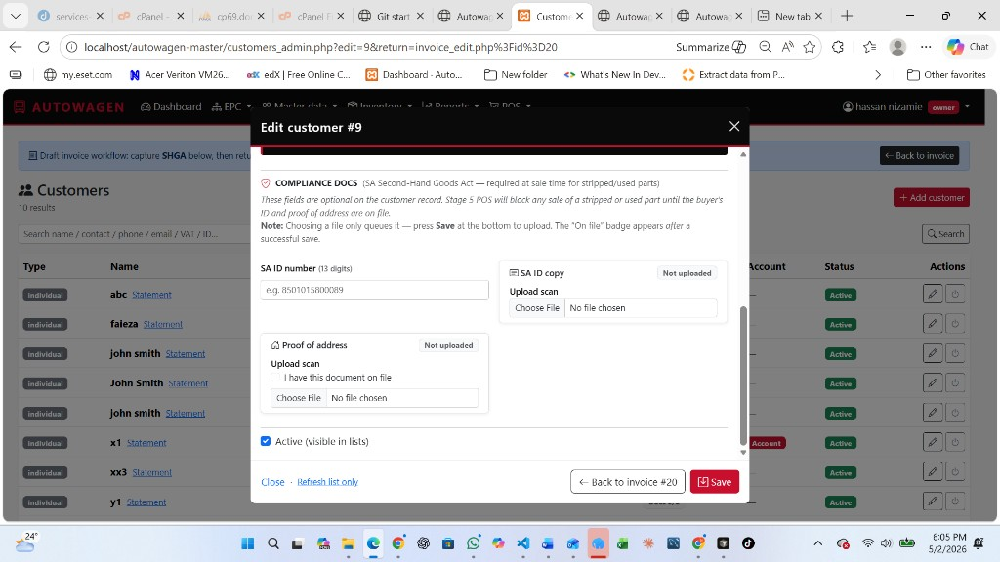

Start the sale — POS menu
Capture the top black navigation bar with POS open and New sale visible (or Dashboard card that leads to POS). Helps viewers recognise where daily trade begins.
Figure A — Navigation: POS → New sale
File: docs/manual_screenshots/marketing-pos-a-pos-new-sale.png

Tip: Include browser URL ending in invoice_edit.php?id= in a later shot so brochure readers trust it is live software.
New draft invoice
Show the headline Draft invoice #…, breadcrumb/link All invoices, and empty or partial working area — establishes “sandbox before commitment”.
Figure B — Draft title + workspace
File: docs/manual_screenshots/marketing-pos-b-draft-header.png

Buyer on the invoice
Frame the Customer & dates card: dropdown, New customer (quick), invoice date / optional due date, notes, red Save draft. This answers “how we know who owes us.”
Figure C — Customer + Save draft
File: docs/manual_screenshots/marketing-pos-c-customer-block.png

New customer doesn’t exist yet — Quick add screen
After clicking New customer (quick), capture the minimalist form (customer_quick_add.php): type, name, phone, billing address · note the line that promises full docs later under Master data → Customers.
Figure D — Quick add customer
File: docs/manual_screenshots/marketing-pos-d-quick-add-customer.png

Customers list — picking or fixing the buyer record
Opened from draft invoice (Open customers) or Master data · shows compliance at a glance (Docs 2/2) · blue Back to invoice bar returns to the POS draft.
Figure E — Customers with “Back to invoice” (invoice workflow)
File: docs/manual_screenshots/marketing-pos-e-customer-selected.png

Ready to attach spares
Capture the card with Select item…, numeric Part ID / qty / optional price · maybe Add manual line header edge. Highlights two ways merchandise enters the invoice.
Figure F — Add part tools
File: docs/manual_screenshots/marketing-pos-f-add-part-card.png

Choosing spares — search modal
Open Select item… with typed search plus at least two result rows. Shows clerks don’t need paper SKU lists memorised.
Figure G — Modal search results
File: docs/manual_screenshots/marketing-pos-g-select-item-modal.png

Choosing lines from full inventory (optional path)
From coloured links in Select item… staff land on parts list filtered by source · qty + Add to invoice posts rows to the draft · Back to invoice blue bar restores the POS screen · only Available lines get the red buttons.
Figure H — Parts list + Add to invoice (from invoice workflow)
File: docs/manual_screenshots/marketing-pos-h-lines-total.png

SA compliance uploads on the buyer (SHGA)
Edit customer captures ID copy & proof of address once per buyer · Save persists scans · Back to invoice #… returns to finalize when docs are ready.
Figure I — Edit customer · compliance docs (from POS)
File: docs/manual_screenshots/marketing-pos-i-shga-aside.png

Lock it in — Finalize
Green Finalize invoice after customer + lines are correct · numbering + stock follow this click · same screen area also shows Notes / Lines / Manual line entry.
Figure J — Draft invoice with Finalize visible
File: docs/manual_screenshots/marketing-pos-j-finalize.png

Printed face — Invoice / letterhead preview
Shown: Draft headline + black bar contact strip + POS instructions — reuse structure for marketing; swap this PNG for any INV-YYYY-NNNNN final screenshot when available.
Figure K — Branded header + draft banner (upgrade to finalized INV‑… later)
File: docs/manual_screenshots/marketing-pos-k-final-inv-print-zone.png

Delivering PDF to the customer
Placeholder reuse: Shows mid-invoice chrome (Finalize / lines). Replace file with Chrome Ctrl+P → Destination: Save as PDF dialog when exporting for email/WhatsApp hand-off.
Figure L — Swap for browser Print→PDF dialog (recommended)
File: docs/manual_screenshots/marketing-pos-l-print-to-pdf.png